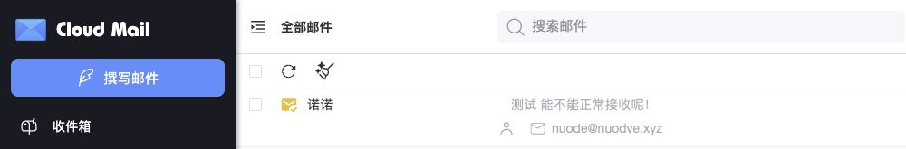
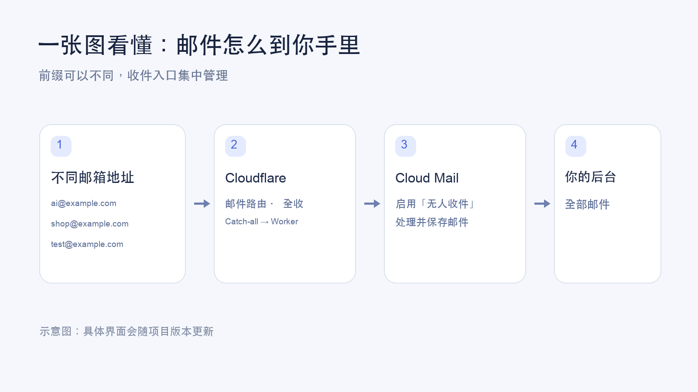
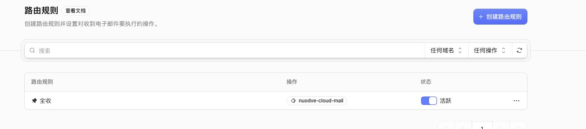
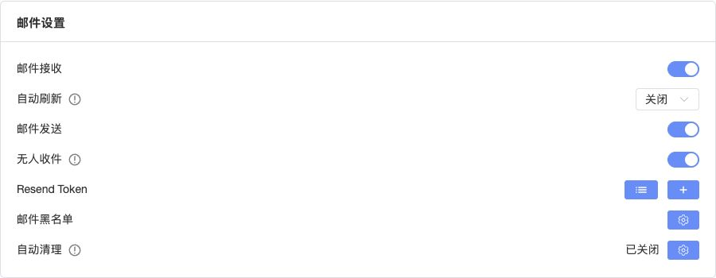
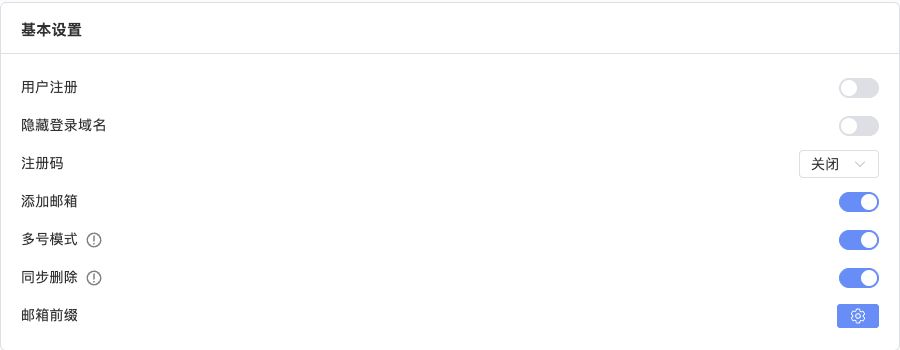

有时候只想试一下一个网站，它却要求先注册邮箱。填常用邮箱吧，后面可能收到一堆推广邮件；用网上的临时邮箱，以后想找回账号，又不一定能再收到邮件。
所以我用自己的域名搭了一个邮箱，临时注册网站时，邮箱前缀随手取就行。
比如：
ai@你的域名
shopping@你的域名
random123@你的域名
前面的名字可以自己取，不用提前创建。收到的邮件都在同一个网页后台查看。
我试着给 test 地址发了一封邮件，又给没有提前创建过的 nuode 地址发了一封，后台都收到了。

上图是我自己的实际测试截图，为便于阅读做了裁切。
我用的是 Cloud Mail + Cloudflare。搭建时把需求交给 AI Agent，自己配合登录、验证和确认域名设置就行。
下面把完整过程写出来。
一、这套邮箱到底是什么？
先看一张图：

能直接给没创建过的地址发邮件，靠的是两个设置：
- Cloudflare 邮件路由的「全收」：发到域名下不同前缀的邮件，交给 Cloud Mail 处理。
- Cloud Mail 的「无人收件」：即使这个地址没有提前在后台创建，也允许接收邮件。
两边都配置好之后，想用哪个前缀就可以直接用。邮件最后集中在管理员后台的 「全部邮件」里。
这里的临时邮箱可以随手取名，也可以一直留着用。不同地址的邮件集中在一个后台管理，不需要记一堆账号和密码。
二、开始前需要准备什么？
1. 一个自己的域名
比如你拥有 example.com，以后就可以使用：
ai@example.com
news@example.com
shop@example.com
文中的 example.com 只是演示。实际操作时，把它换成你自己能管理的域名。
如果已经有域名，就可以用现成的。想长期使用邮箱，记得续费域名，并保持解析和邮箱服务正常。
2. 一个 Cloudflare 账号
Cloudflare 在这里负责域名解析、邮件路由和运行邮箱程序。
官网：https://www.cloudflare.com/
没有账号就先注册一个。个人使用可以先从免费额度开始，具体限制和费用以 Cloudflare 当前页面为准。
3. 一个能帮你操作的 AI Agent
我使用的是可以操作电脑和命令行的 AI Agent。Codex 或其他有相应工具权限的 Agent 都可以尝试。
遇到登录、短信验证或授权，在自己的页面上操作，再让 Agent 继续。
4. 另外一个能正常使用的邮箱
比如你平时的 QQ 邮箱、Gmail 或其他邮箱。
部署完成后，用它给新地址发一封邮件，测试能不能收到。
三、先认识一下要用的项目
项目叫 Cloud Mail，是一个基于 Cloudflare 的开源邮箱项目。
项目地址： https://github.com/maillab/cloud-mail
官方部署文档： https://docs.skymail.ink/guide/quick-start
它提供网页界面，可以管理邮箱地址和邮件。部署时会用到 Cloudflare Workers、D1 数据库、KV 等资源；邮件接收通过 Cloudflare Email Routing 实现。
你可以让 Agent 先读项目当前的官方文档，再按最新版本部署。界面和步骤可能随版本变化，遇到和截图不一样的地方，以实际页面和官方文档为准。
四、复制提示词，交给 Agent 部署
把下面的 example.com 换成你的域名，再把整段发给 Agent：
请帮我部署一套 Cloud Mail 个人邮箱系统。
项目地址：
https://github.com/maillab/cloud-mail
我的域名：
example.com
请先阅读项目当前的官方部署文档，并按下面的要求操作：
一、先检查现有环境
1. 检查我是否已登录 Cloudflare，以及域名当前由哪家服务商管理 DNS。
2. 如果域名已经用于网站、监控、邮件或其他服务，先核对并备份已有 DNS 记录、邮件记录和 DNSSEC 状态。
3. 如果需要切换域名服务器，先准备好完整记录，说明可能的影响；不要直接覆盖或删除现有配置。
4. 等域名解析生效后，检查原有网站和相关服务是否正常。
二、部署邮箱
1. 在 Cloudflare 的免费方案能力范围内部署 Cloud Mail，创建并绑定项目需要的 Workers、D1 和 KV 等资源。
2. 使用我的域名作为收件域名，并配置一个独立的网页登录地址，例如 mail.example.com。
3. 配置 Cloudflare Email Routing，把 Catch-all（全收）规则指向 Cloud Mail Worker，并启用规则。
4. 在 Cloud Mail 中开启“邮件接收”和“无人收件”，让我不需要提前创建每个地址，也可以接收发送到不同前缀的邮件。
5. 帮我安全初始化管理员账号。妥善保护初始化过程，避免管理员账号被别人抢先注册；完成后关闭不需要的公开注册。
6. 密码、API Token 和 JWT 密钥请使用安全方式保存，不要显示在聊天记录、截图或公开文件中。
7. 界面优先使用中文。如果初始显示英文，请帮我切换语言；如需要再设置新设备首次访问的默认语言。
三、检查和交付
1. 告诉我登录地址、管理员账号以及如何安全取得密码。
2. 检查 DNS、邮件路由和邮箱页面是否正常。
3. 指导我用另一个邮箱，分别向已经创建和未提前创建的地址发送测试邮件，再核对是否在“全部邮件”中收到。
4. 说明收信、免费额度和附件存储的实际情况；没有测试过的功能不要说已验证。
5. 如果需要我登录、短信验证或授权，请提示我在页面上完成；不需要我把验证码发到聊天里。
6. 如果遇到需要付款、绑定支付方式或开通可能收费的订阅，先告诉我。
Agent 不一定会一次完成，中途可能需要你配合：
- 登录 Cloudflare；
- 登录域名注册商；
- 输入短信验证码；
- 在 Cloudflare 页面确认部署工具需要的权限。
看清楚是哪个服务、需要什么权限，再在对应页面操作。不要把密码、验证码或密钥直接贴到聊天、推文和截图里。
五、部署过程中，有两处设置一定要检查
这两步决定了“随手想一个地址就收信”能不能实现。
第一步：Cloudflare 开启「全收」
在 Cloudflare 的邮件路由中，找到域名对应的路由规则，把 「全收」/ Catch-all 的操作设置为发送到部署好的 Cloud Mail Worker，然后启用规则。
我的配置完成后大致是这样：

这是我的实际配置截图，Worker 的名称会因个人部署而不同。
如果原来已经使用其他域名邮箱，修改 MX 或邮件路由可能影响原有收件。先让 Agent 检查现有邮件服务和记录，再决定怎么迁移。
第二步：Cloud Mail 开启「无人收件」
进入 Cloud Mail，使用管理员账号登录，然后打开：
管理 → 系统设置 → 邮件设置
检查：
- 邮件接收：开启；
- 无人收件：开启。

“无人收件”的意思是：即使收件地址没有提前注册，也可以接收这封邮件。它和 Cloudflare 的全收规则要一起配合。
如果是个人使用，管理员账号设置完成后，也建议检查一下用户注册是否已经关闭：

六、怎么测试自己有没有搭成功？
网页打开后，再用另一个邮箱发两封邮件测试一下。
测试一：发给一个提前创建的地址
先在 Cloud Mail 里创建或使用一个已有地址，然后从另一个邮箱发一封测试邮件。
登录邮箱网页，查看是否收到。
测试二：发给一个没有提前创建的地址
再随手想一个新前缀，例如：
hello123@example.com
注意：这里不要先去后台创建它，直接用另一个邮箱发送测试邮件。
然后用管理员账号打开：
管理 → 全部邮件
看看这封邮件有没有出现。
我用 test 和没有提前创建的 nuode 地址分别测试过，都收到了邮件。
如果没收到，可以让 Agent 依次检查：
- 域名是否已经正确接入 Cloudflare，DNS 是否生效；
- 邮件 MX 记录是否指向 Cloudflare；
- Email Routing 的「全收」是否启用，并指向正确的 Worker；
- Cloud Mail 的「邮件接收」和「无人收件」是否开启；
- 是否在管理员的「全部邮件」中查看；
- 发件方有没有收到退信，Cloudflare 路由活动日志里有没有报错。
刚切换 DNS 时可能需要等一段时间生效，可以先检查状态，再决定是否需要调整。
七、以后怎么用？
比如你只是想试一个网站，不想留下常用邮箱，就可以用：
website@example.com
注册另一个服务时，再换一个前缀：
tool@example.com
验证码和后续邮件都集中到你的 Cloud Mail 后台。如果某个地址后来一直收到推广邮件，你也更容易分辨这个地址是在哪个场景用过的。
开启全收后，垃圾邮件也可能进来。遇到经常收到推广的地址，可以再研究邮件过滤或路由规则。
最后
搭好以后，用起来很简单：
想一个地址 → 拿去注册 → 打开自己的邮箱后台 → 在「全部邮件」查看。
试用网站时随手取个地址，验证码和后续邮件都能回到自己的后台。
项目和文档再放一次：
配图说明：封面和流程图是教程示意图；Cloudflare 路由、Cloud Mail 设置与收件结果来自我的实际操作截图，均做了裁切。本文记录的是当前版本和本次测试结果，服务界面及免费额度可能变化。